Bloom · Phase 11.7.2 persistence QA İlk persistence koşusunun seçilmiş tarihsel HTML/native, migration ve retry kanıtları. Önceki en büyük yazı değerlendirmesi geri çekilmiştir; güncel tipografi ve normal/maksimum örnekleri ayrı galeridedir. Ham görüntüler silinmez; yüzlerce ara PNG Git kapsamı dışında yerelde korunur.
QA raporu · Veri sözleşmesi · Onaylı responsive tipografi · Git / yerel kapsam · Git screenshot manifesti · Hashler (yalnız bütünlük) · Migration kanıtı · Veri koruma
Tanıtım HTML · tasarım örneği 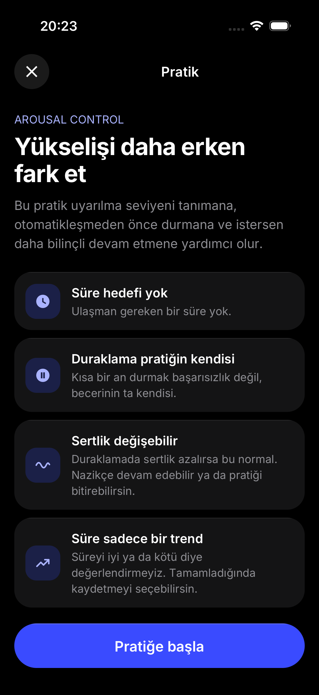
Tarihsel native persistence akışı · geçerli tipografi örneği için yeni galeri Egzersiz 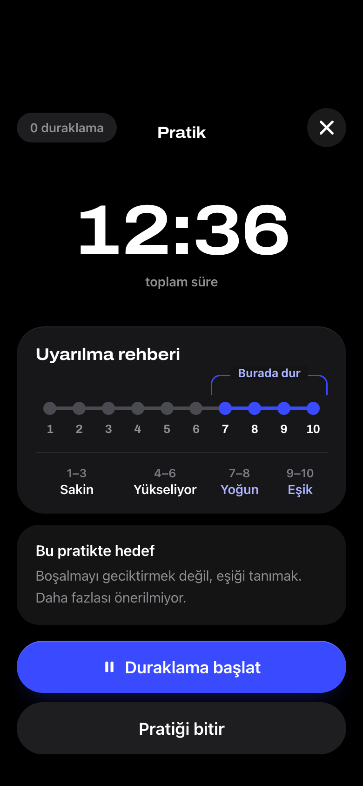
HTML · tasarım örneği 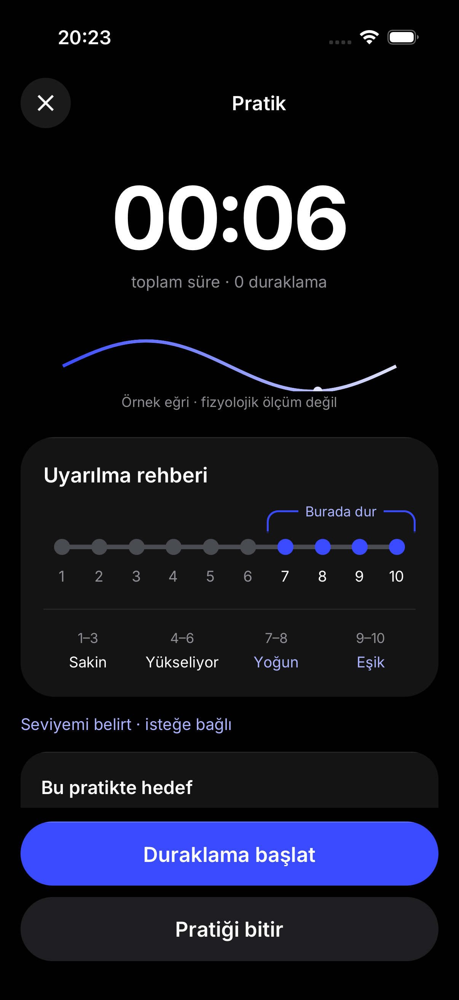
Tarihsel native persistence akışı · geçerli tipografi örneği için yeni galeri Duraklama HTML · tasarım örneği 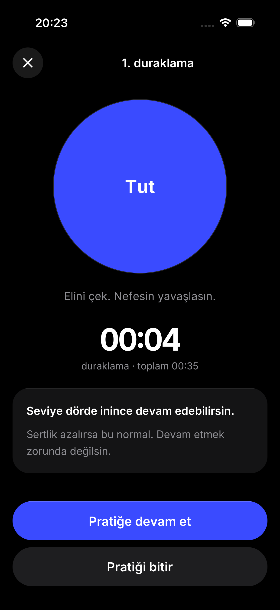
Tarihsel native persistence akışı · geçerli tipografi örneği için yeni galeri Soru 1/3 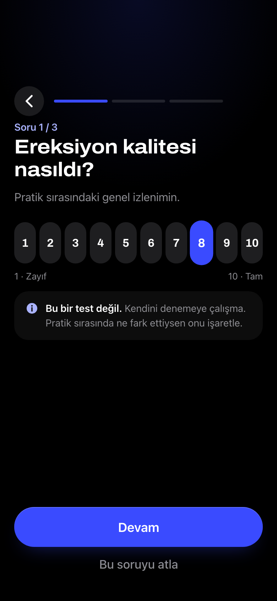
HTML · tasarım örneği 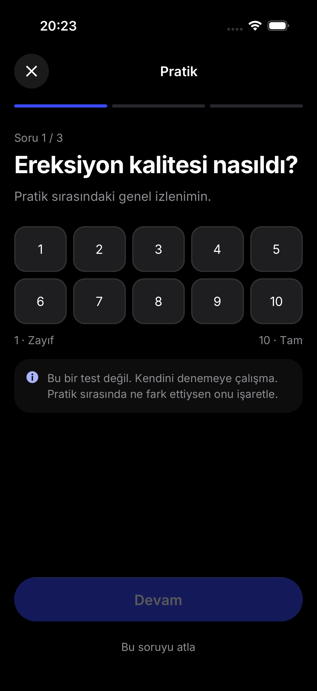
Tarihsel native persistence akışı · geçerli tipografi örneği için yeni galeri Soru 2/3 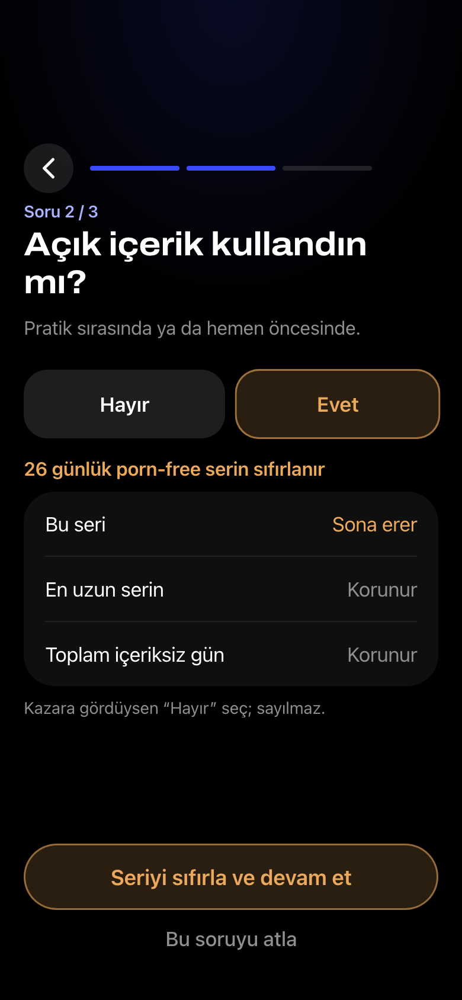
HTML · tasarım örneği 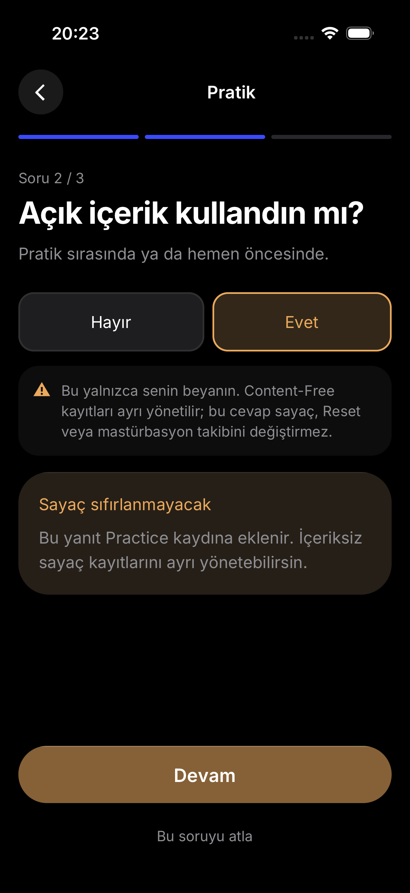
Tarihsel native persistence akışı · geçerli tipografi örneği için yeni galeri Soru 3/3 HTML · tasarım örneği 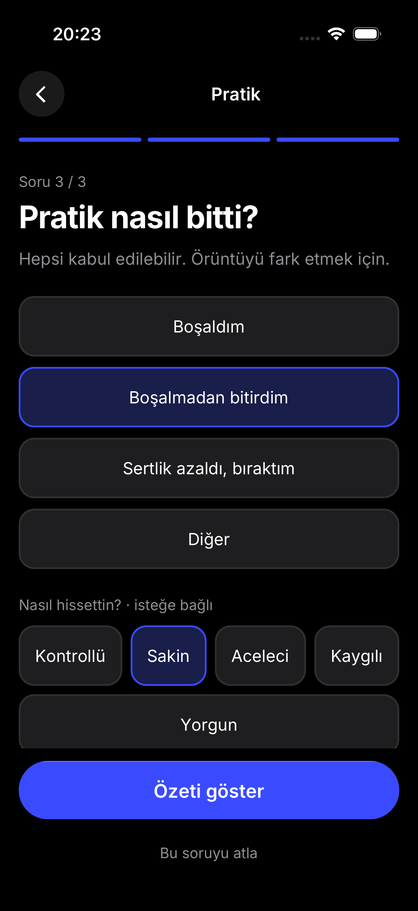
Tarihsel native persistence akışı · geçerli tipografi örneği için yeni galeri Durable kayıt HTML · tasarım örneği 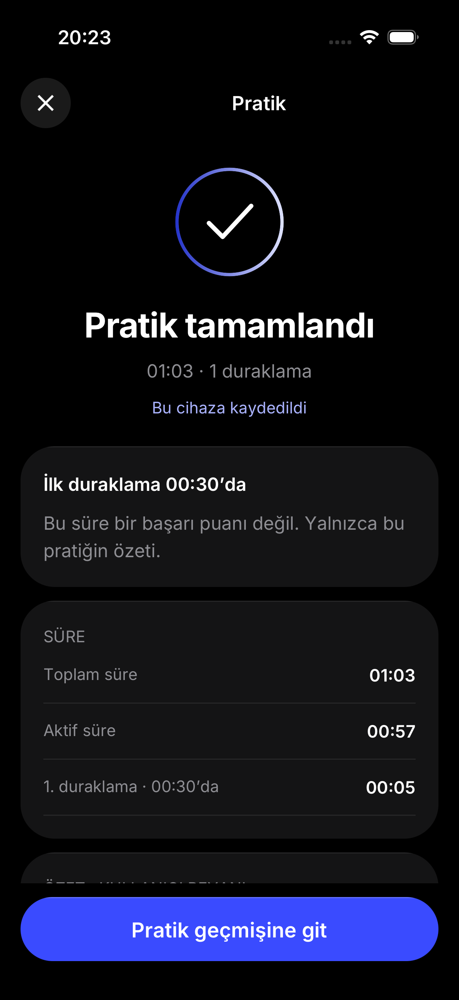
Tarihsel native persistence akışı · geçerli tipografi örneği için yeni galeri Migration, exact retry, fail-closed, deletion ve preview sınırı 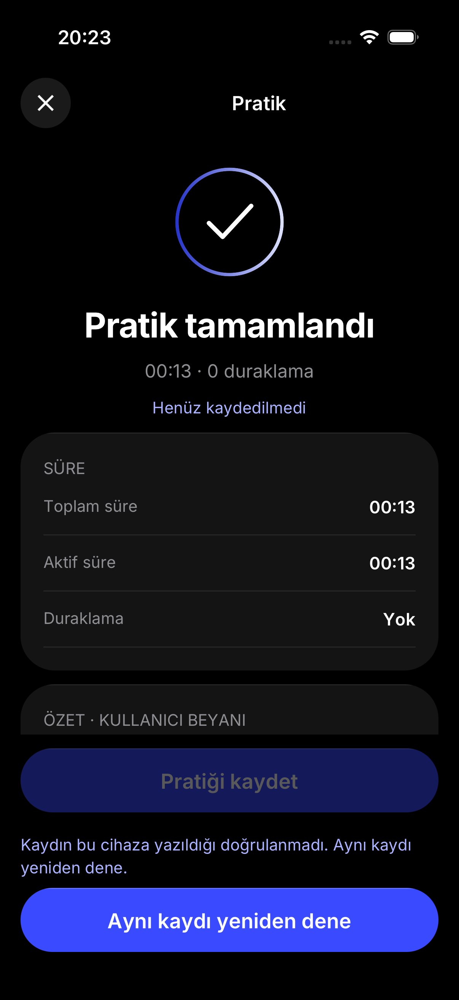
İzole sentetik QA · 12-native-save-retry 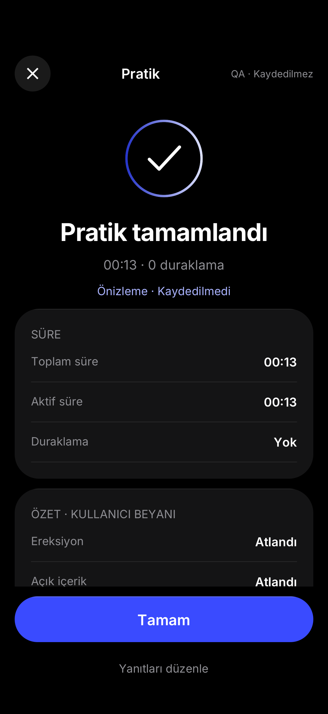
İzole sentetik QA · 26-native-memory-preview-unsaved İzole sentetik QA · corrupt-v9-native-storage-fails-closed 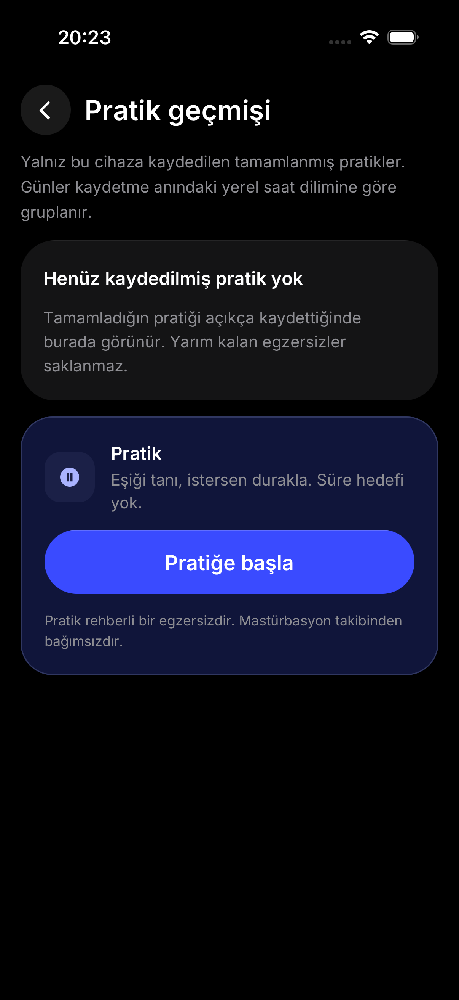
İzole sentetik QA · native-deletion-rehydrated-empty-history 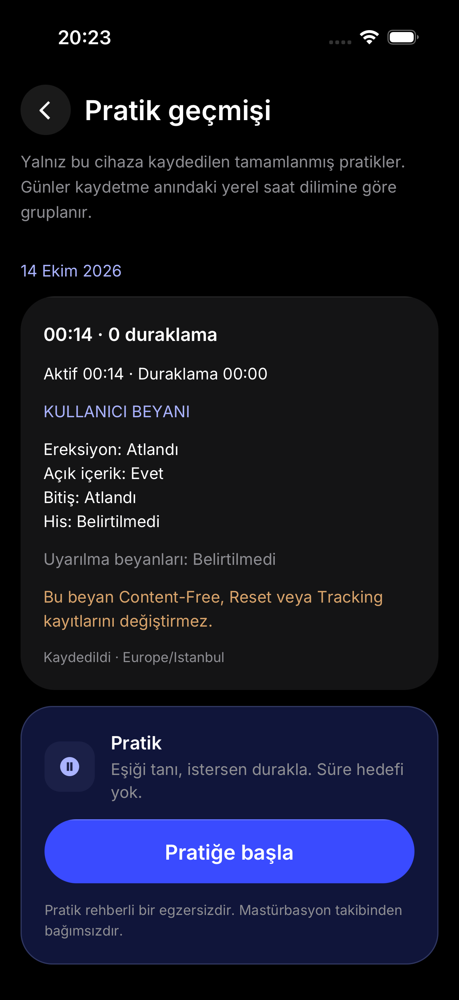
İzole sentetik QA · populated-v8-native-populated-preserved-history 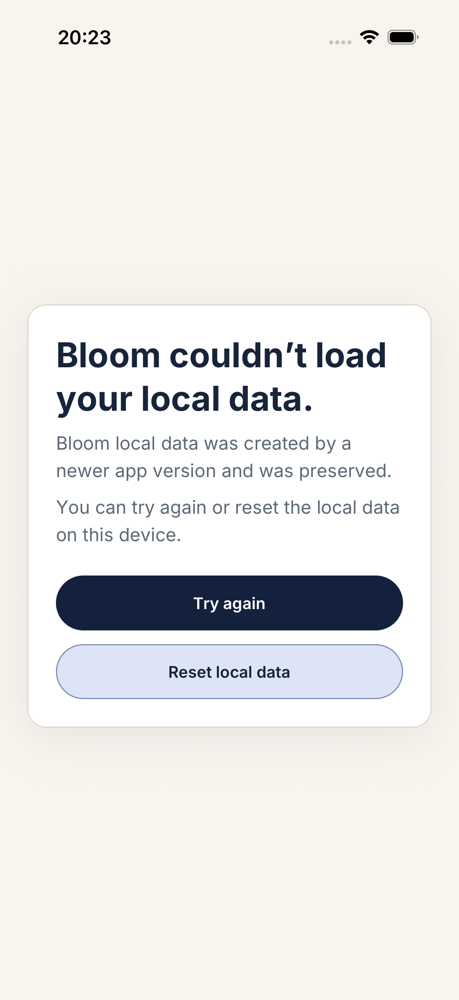
İzole sentetik QA · unsupported-v9-native-storage-fails-closed Reddedilen önceki en büyük tipografi Başarılı görsel kanıt değildir. Orijinal dosya korunur.
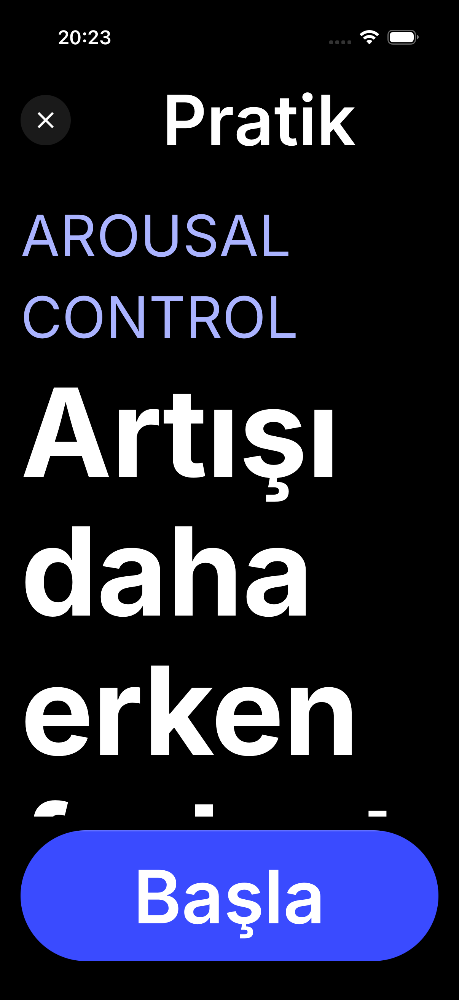
REDDEDİLEN ADAY · önceki aşırı büyük/bozuk intro